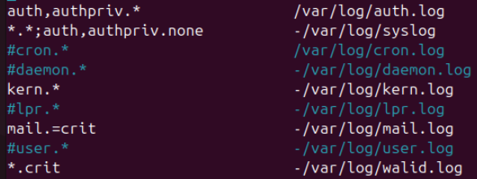
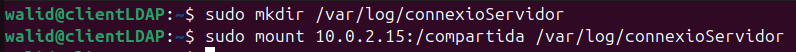

Sprint 4
Connexió remota TeamViewer
Instalacio
Primer de tot, anirem a a la pagina oficial de TeamViewer i accedirem al boto de descarga gratuita.

En aquest cas, al ser una prova utilitzarem la versio gratuita de TeamViewer
Seguidament, descargarem el fitxer (en aquest cas la primera opcio).
En Ubuntu, necessitarem instalar les seguents dependencies:
(sudo) apt install libminizip1 libxcb-xinerama0
Finalment, instalem el paquet. En aquest cas es a partir d'un fitxer .deb, el qual es pot instalar amb la seguent comanda:
(sudo) dpkg -i [nom del fitxer .deb]
Una vegada instalat, accedim al TeamViewer i acceptem el EULA.
Finalment, estem al menu principal de TeamViewer
Connexio
Per connectar-nos a un altre ordinador, primer ha de tenir TeamViewer instalat. A part s'ha de tenir un compte de TeamViewer iniciat a l'ordinador el qual es connectara amb l'altre.
Primer, necessitarem el Partner ID del dispositiu que volem connectar-nos i escollim el el boto de remote control.
Ens demanara la contrasenya que es mostra al dispositiu que ens volem connectar.
En el dispositiu que es vol connectar, Ubuntu ens demanara permisos per acceptar el control remot de la nostra pantalla.
Finalment, estem connectats al dispositiu de forma remota.
Comprovacio
Per comprovar que hem accedit al dispositiu de forma remota, s'ha creat un fitxer en el home de l'usuari.
En el dispositiu connectat, es pot veure que el fitxer s'ha creat.
Monitorització
Que son els Logs
Els logs son arxius on el sistema operatiu i les aplicacions enregistren informacio sobre esdeveniments, errors, advertencies i altres activitats.
Aquests registres son utils per diagnosticar problemes i monitorar el sistema.
Fitxers
Els fitxers on es guarda els logs del sistema Linux es troben en la carpeta:
/var/log/
Els mes importans son:
- syslog: esdeveniments generals del sistema.
- auth.log: registres d'autenticacio com inici de sessions.
- kern.log: esdeveniments del kernel de Linux.
Visualitzar Logs
Els logs es poden visualitzar de dues formes:
- Al ser arxius, es pot utilitzar tail per veure els ultims errors ocurrits.
tail -f [log]
- Utilitzant la comanda journalctl:
La comanda solament mostrara els logs de syslog, a part es pot adjuntar amb grep o els parametres necessaris.
journalctl (parametres)
Parametres: - -n o -X: mostra les ultimes linees. - -f: fa un seguiment en temps real. - -r: mostra els logs en ordre invers(els mes recents primer). - --since "YYYY-MM-DD HH:MM:SS": mostra els logs de un moment en especific. - --until "YYYY-MM-DD HH:MM:SS": mostra els logs fins a un moment en especific. - -u (nom de servei): mostra els logs de un servei especific. - -p (nivell de registre): mostra els logs segons el nivell de registre.
En aquest cas s'utilitza els parametres xe per a mostrar informacio extra (x) i que mostri directament les ultimes linees (e).
Configuracio
Es pot configurar els logs per a que certs arxius solament tinguin certs logs.
En aquest cas afegirem els logs critics a un arxiu personalitzat.
Primer, obrirem l'arxiu per a configurar els logs:
(sudo) nano /etc/rsyslog.d/50-default.conf
Segudimanet, afegirem la linea per a que tots els logs critics s'escriguin al nostre fitxer:

*.crit -[ruta absoluta del fitxer]
Una vegada fets els canvis, reiniciem el servei:
(sudo) systemctl restart rsyslog
Per no es esperar a que un error apareixi, enviarem un error amb un missatge personalitzat a proposit:
(sudo) logger -i -s -p [apartat].[categoria] [missatge]
Finalment, podem veure en el fitxer que el log s'ha guardat correctmanet:
Enviar Logs a un servidor
Per enviar logs a un servidor extern, utilitzarem NFS per a compartir una carpeta i guardar els logs.
Primer de tot, crearem una carpeta per a que faigui de connexio entre el servidor i l'equip:
Warning
La carpeta ha d'estar dintre de /var/log/ de l'equip ja que a fora d'aquesta els logs no es crearan.
(sudo) mkdir /var/log/[carpeta]
A continuacio, montarem la carpeta del servidor en la local:
(sudo) mount [ip servidor]:[carpeta en ruta absoluta] [carpeta local en ruta absoluta]

En el fitxer de configuracio dels logs, crearem la regla per a capturar els logs i el guardarem a la carpeta que esta compartida per el servidor:
Reiniciem el servei de logs:
(sudo) systemctl restart rsyslog
Enviem un log per a comprovar que els logs s'envien al servidor de forma correcta:
Finalment, podem veure que al servidor s'ha guardat el log de forma correcta:
Llicenciament
Una llicencia de programari es un conjunt de condicions legals que determinen com es pot utilitzar, modificar i distribuir un programa informatic.
Aquestes llicencies protegeixen els drets dels desenvolupadors i estableixen els limits d'us per als usuaris.
Hi han dos grans blocs de llicencies, la publica i la privada:
Privat
Les llicencies privades, restringeixen l'acces al codi font i limiten l'us, modificacio i distribucio del programari. Dins d'aquest tipus de llicencia es hi han unes quantes subcategories:
Llicencia Comercial
- Destinada a la venda i us Comercial
- L'usuari ha de pagar per utilitzar el programari i no pot modificar-la
- Usada en la majoria de casos
- Exemples: Microsoft Windows, Adobe Photoshop, AutoCAD
Llicencia d'us restringit (EULA)
- Estableix les condicions d'us per a l'usuari final
- Pot restringir la instalacio a un nombre limitat de dispositius
- Sovint inclou clausules contra la modificacio o enginyeria inversa
- Exemples: TeamViewer, Microsoft Office, Steam
Llicencia per subscripcio
- Utilitza les mateixes clausules que la llicencia Comercial
- Es requereix un pagament periodic
- S'utilitza majoritariament en programes freemium (el programa es gratuit pero es pot pagar per obtindre millores)
- Exemples: Microsoft 365, Adobe Creative Cloud, Spotify premium
Public
Les llicencies publiques permeten l'us, modificacio i distribucio del programari amb diverses condicions.
Hi ha diversos subcategories on cadascuna estableix diferents nivells de llibertat i restriccions.
Sota qualsevol d'aquestes llicencies estan els programes lliures (PL) els quals han de complir 4 llibertat:
- Utilitzar-lo sense condicions
- Estudiar-lo i adaptar-lo a les propies necessitats
- Distribuir-lo
- Millorar-lo i distrbuir les modificacions
Note
Cal tenir en compte que per poder complir les llibertats s'ha de tenir acces al codi font del mateix.
Es pot aprofundir mes del tema clicant aquest enllac.
GPL (GNU General Public License v3.0)
- Creat per la Free Software Foundation (FSF).
- Garanteix que el programari sigui lliure i que qualsevol obra derivada tambe ho sigui.
- Obliga a compartir el codi font de les modificacions.
- Exemples: Linux Kernel, WordPress, VLC Media Player.
LGPL (Lesser General Public License)
- Variant mes permissiva de la GPL.
- Permet enllacar llibreries de programari lliure amb programari privatiu.
- Exemples: OpenSSL, FFmpeg
MIT License
- Molt permissiva i compatible amb altres llicencies
- Permet l'us, modificacio i distribucio amb la condicio d'incloure la llicencia original.
- No obliga a fer el codi derivat lliure.
- Exemples: Node.js, Ruby on Rails.
Apache License 2.0
- Similar a la MIT, pero afegeix proteccions legals en cas de patents.
- Permet l'us comercial i modificacions sense obligacio de fer-les publiques.
- Exemples: Apache HTTP Server, Android (part del codi), TensorFlow.
Propietat Intelectual i Copyright
Propietat Intelectual
La propietat intelectual son els drets que tenen els autors sobre les seves creacions. En el cas del programari, es considera una obra de caracter literari i queda protegida automaticament des del moment que es crea.
La propietat intelectual en Espanya esta regulada per la LLei de Propietat Intelectual.
Drets d'autors
Els drets d'autor son el conjunt de normes que protegeixen les obres creatives i els seus autors. Esta regulada per LLei de Propietat Intelectual i inclou llibres, musica, programari, pelicules, fotografia i obres artistiques.
Els drets d'autor es divideixen en drets morals els quals son irrevocables i drets patrimonials els quals es poden transferir a un tercer:
-
Drets morals (Irrevocables):
- Dret de reconeixement: l'autor te dret a ser identificat com a creador de l'obra.
- Dret d'integritat: Es protegeix l'obra de modificacions que puguin perjudicar-ne l'essencia o el significat.
- Dret de modificacio: L'autor pot canviar l'obra si ho desitja.
- Dret de retirada: l'autor pot retirar l'obra del mercat per raons personals, compensant possibles perjudicis a tercers.
- Dret d'acces: l'autor pot accedir a l'obra original encara que la propietat material pertanyi a una altra persona.
-
Drets patrimonials (Transferibles):
- Dret de reproduccio: l'autor pot controlar la copia de l'obra en qualsevol format.
- Dret de distribucio: L'autor decideix com i on es ven o distribueix l'obra.
- Dret de comunicacio publica: l'autor pot regular l'exhibicio publica de l'obra.
- Dret de transformacio: nomes l'autor pot autoritzar modificacions de l'obra.
Proteccions
El programati esta protegit per la LLei de Propietat Intelectual i per les normatives europees, com la Directiva 2009/24/CE.
El desenvolupador o l'empresa obte les proteccions als seguents punts:
- Codi font i compilat.
- Interficie grafica: en alguns casos tambe pot estar protegida.
- Documentacio tecnica i manuals d'usuari.
Durada
La durada pot variar si el programa pertany a un autor o auna empresa (obra colectiva).
Drets d'explotacio / Drets patrimonials:
- Empresa (obra colectiva): 70 anys des de la seva publicacio.
- Autor: tota la vida de l'autor mes 70 anys de la seva mort.
Drets morals:
- Son permanents i inalterables.
Excepcions i usos permesos
Hi ha algunes situacions en que es pot utilitzar una obra sense permis de l'autor:
- Cita i parodia: es pot citar una obra per a finalitats docents, informatives o critiques. Tambe es permet la parodia sense afectar la reputacio de l'autor.
- Us en educacio: Les institucions educatives poden utilitzar fragments d'obres sense anim de lucre.
- Llicencies lliures: l'autor pot optar per llicenciar el seu programari sota llicencies publiques. Aquest cas no revoca els drets d'autor.
Secret Comercial
El secret comercial es qualsevol informacio confidencial que una empresa utilitza per obtenir un avantatge competitiu i que no es coneguda pel public. Aquesta informacio pot incloure metodes, formules, processos, estrategies empresarials, programari propietari, etc.
Les caracteristiques mes importants del secret comercial son:
- Confidencialitat: no ha de ser de coneixement public.
- Valor economic: ha de donar un avantatge competitiu.
- Proteccio: l'empresa ha de prendre mesures per a mantenir-lo en secret.
Proteccio legals
El secret comercial esta protegit per la Llei de Secrets Empresarials basada en la Directiva 2016/943 de la UE.
Els punts mes importants son:
- No requereix registre oficial: no es requereix ja que es protegeix per mitjans interns.
- Proteccio contra l'us no autoritzat: l'us indegut o divulgacio per part de treballadors, ex-empleats o competidors pot ser denunciat.
- Proteccio indefinida: a diferencia de les patents (20 anys de proteccio legal) el secret comercial pot durar de forma indefinida si es mante confidencial.
Proteccio interna
Les empreses implementen mesures de seguretat internes per evitar filtracions indegudes, la majoria utilitza les seguents:
- Contractes de confidencialitat (NDA): contractes que obliguen al treballador i socis a no revelar informacio.
- Restriccions d'acces: nomes els empleats necessaris poden accedir a l'informacio.
- Xifratge i seguretat informatica: apliquen algoritmes de xifratge als documents i politiques de seguretat necessaries.
Patents i models d'utilitat
Patents
Les patents protegeixen invencions relacionades amb metodes o processos innovadors que poden ser implementats.
Els requisits son els seguents:
- Invencio nova.
- Inventiva (que no sigui obvia per a un expert de la materia).
- Aplicable industrialment.
La durada es de 20 des de la solicitud amb el pagament de taces de manteniment.
Models d'utilitat
Els models d'utilitat poden protegir millores funcionals de un programa o patents existent.
Els requisits son els seguents:
- Nou i utilitat
- No cal que sigui tan inventiu com una patents
La durada es inferior a la de una patent, en aquest cas 10 anys.
Diferencies clau
| Característica | Patent (Programari) | Model d'Utilitat (Programari) |
|---|---|---|
| Requisits | Alta innovació i inventiva | Millores funcionals, menys rigorós |
| Durada | 20 anys | 10 anys |
| Tipus d'invenció | Mètodes o processos nous | Millores de programari existent |